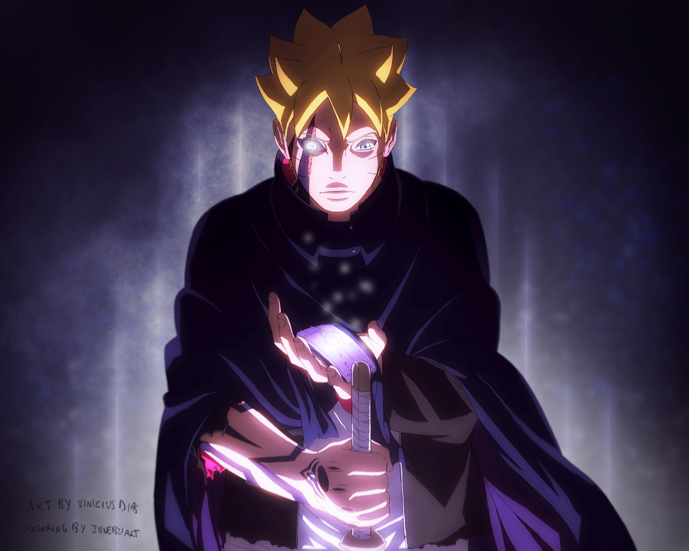
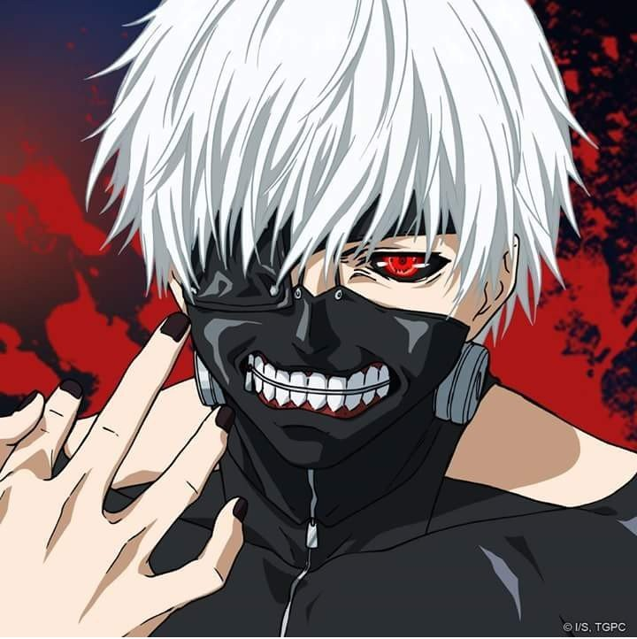

este es un top solo DE LO MEJOR DE LO MEJOR en animes, al menos según mi criterio, así que toma asiento y
disfruta de cada uno de estos épicos animes.
Recuerda que haciendo clic en el nombre de cada anime se te llevará
directo hacia una página para comenzar a ver cada uno de ellos, así que olvidate del problema de no saber en donde verlo.
Esto es MUNDO OTAKU
Boruto es la continuación del popular ánime "Naruto" narrando la vida del hijo de naruto y su gran camino para convertirse en un ninja poderoso y obtener la atención de su padre. Una serie llena de emoción y valores para aquellos grandes fans de naruto. se recomienda ver anruto y naruto shippuden antes de ver esta popular serie
Estado: EN EMISION
En un mundo separado entre humanos y ghouls, un joven tras casi ser devorado por un ghoul, logra salvarse debido a un accidente pero para salvar su vida se le transplanta un organo del ghoul que lo iba a matar, ahora este joven debe vivir como mitad humano, mitad ghoul. se recomienda terapia tras ver la serie :D
Estado: FINALIZADO
